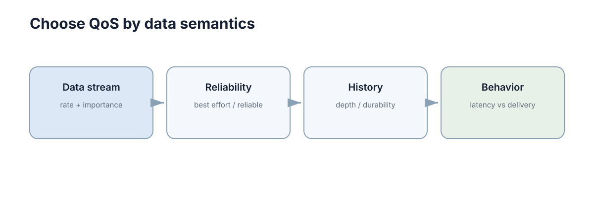

DDS & ROS2
机器人软件通常包含定位、感知、规划、控制和硬件驱动等多个进程。中间件的作用是让这些模块能够交换数据，而不要求每个模块自己重新实现发现、序列化、网络传输和通信质量控制。中间件真正提供的不是"通信能力"，而是一套可以显式声明、可以被检查、可以被验证的通信契约。 一旦把这些契约从"默认值"提升为"设计决策"，绝大多数"偶发丢数据""订阅不到话题""多机连不上"的问题，都会从未知故障变成已知约束。
初学者常把 ROS2 当成"机器人版的函数调用"：只要 Topic 名字对上，publish 之后对方就应该收到。这个心智模型在单机、小数据、默认 QoS 的场景下几乎总成立，于是被悄悄写进设计。等到跨机器部署、防火墙开启、消息变大、订阅者变多时，同一份代码会突然表现出难以解释的行为。
本章沿三个层次推进：先看 ROS2 暴露给应用的基本原语，再看 DDS 如何用 QoS 描述通信语义，最后落到发现机制、多机部署与接口演进的工程细节。贯穿全章的主线是：中间件把通信的可靠性、及时性与完整性变成了可以在两端显式协商的参数，代价是这些参数必须被当作接口的一部分来设计。

ROS2 把模块间通信抽象成几个基本原语
Topic 适合持续数据流，例如 /odom、/scan；Service 适合一次请求、一次响应；Action 适合耗时任务，需要反馈、取消和最终结果。这三种接口反映的是交互时序差异，而不是"哪个更高级"。
把原语选错的代价往往不在功能上，而在时序语义上。用 Service 承载一个需要 30 秒的导航任务，会让调用方在整整 30 秒里无法判断"是还没开始、还是在执行、还是已经卡死"；用 Topic 承载一次明确的结果返回，则会让调用方永远不知道自己等待的那条消息是否会到来。选择原语的依据是"交互什么时候结束、谁能取消它、中间状态是否重要"。
| 原语 | 方向与基数 | 时序语义 | 失败的表现 | 典型用途 |
|---|---|---|---|---|
| Topic | 发布者到多订阅者，1:N | 持续、异步、无结束 | 静默无消费者、丢帧、积压 | 里程计、激光、图像、状态广播 |
| Service | 一请求一响应，1:1 | 短、同步或异步等待 | 超时、服务不存在、阻塞 | 查询参数、触发标定、重置计数器 |
| Action | 目标加反馈加结果，1:1 | 长、可取消、有进度 | 被取消、被抢占、目标丢失 | 导航到点、抓取、长时间任务 |
| Parameter | 配置读写，1:N 服务语义 | 低频、带版本 | 参数未生效、类型不匹配 | 控制器增益、阈值、坐标系配置 |
还有一个常常被忽略的维度：这些原语共享同一套底层 QoS 机制，但默认值不同。 Service 与 Action 建立在 Topic 之上，它们的可靠性默认更偏向可靠传输；而 Topic 的默认策略偏向"尽力而为的持续流"。因此同一个自定义消息类型，走 Topic 和走 Service 时对丢包与积压的敏感程度并不一样，不能只按名字判断。
设计上的一个实用判据是画时序图。把每个交互画成一段有始有终的线条：如果这条线以"消息流"的形式一直存在，用 Topic；如果它有一个明确的终止点，用 Service；如果它在终止之前会产生中间状态、并且可能被取消，用 Action。凡是"能让调用方等待不确定时间"的接口，都应该被重新审视。
DDS 让通信语义可以被显式配置
ROS2 默认依赖 DDS/RTPS 体系。DDS 不只是传输数据，还提供 reliability、history、durability、deadline 等 QoS 语义。这些语义的含义与在 网络通信与消息传递 中讨论的交付保证一一对应，只是被包装成了声明式的配置项。
高频 LiDAR 数据偶尔丢一帧通常可以接受，重点是最新数据尽快到达；任务模式切换则可能要求可靠送达。不同 Topic 使用同一 QoS 并不一定合理，用一套"最可靠"的策略覆盖全部话题，会把实时链路的延迟抬高，也会让内存占用失控。
DDS 的核心设计是"以数据为中心"：通信双方不直接绑定对象，而是各自声明自己发布或订阅哪种数据、以及在什么质量条件下参与。中间件负责匹配。这个模型的代价是，通信是否建立变成一个由双方策略共同决定的结果，而不是一次直接调用——这也是后面 QoS 兼容性检查之所以重要的根本原因。
| 概念 | 含义 | 对应到应用层的理解 |
|---|---|---|
| Domain | 逻辑隔离域 | 同一域内的参与者才会互相发现 |
| Participant | 进程内的 DDS 实例 | 一个 ROS2 节点上下文对应一个参与者 |
| Publisher / Subscriber | 发布与订阅的聚合点 | 管理与 QoS 相关的资源与策略 |
| Topic + Type | 数据主题与数据类型 | 必须同时匹配，名字对而类型不对无法通信 |
| QoS Profile | 一组策略的命名集合 | 接口契约中应当被显式记录的部分 |
理解 DDS 的另一个角度是资源视角：每一个"可靠"的订阅关系都会在中间件内部维护缓存、重传队列和心跳状态。QoS 不是免费的行为开关，它直接决定内存占用、CPU 开销和网络流量。 因此评审 QoS 配置时，除了问"语义对不对"，还要问"在 100 个话题、20 个订阅者的情况下，这套配置的内存上限是多少"。
一个常见的调优经验是：把"最新值最重要"的传感器流设为 best-effort 加较浅的 history，把"事件不能丢"的状态变更设为 reliable 加较深的 history，并且只对少数关键话题开启 reliable。中间件的稳定性往往取决于它承载了多少可靠会话，而不是取决于单条消息的传输速度。
QoS 策略逐项解读
QoS 的困难在于每一项都有一个看起来合理的默认值，而默认值只在"单机小数据"这一种场景下是对的。下面六项是 ROS2 中最常需要显式决定的策略，它们的语义、适用场景与写错后的症状可以直接对照。
| 策略 | 可选值 | 典型默认 | 适用场景 | 写错后的症状 |
|---|---|---|---|---|
| Reliability | RELIABLE / BEST_EFFORT | 传感器流常用 BEST_EFFORT | 关键事件用 RELIABLE，高频流用 BEST_EFFORT | 两者不兼容时完全收不到消息 |
| Durability | VOLATILE / TRANSIENT_LOCAL | VOLATILE | 需要"上线即拿到最后一次值"（如地图、参数） | 后加入的订阅者一直收不到初始值 |
| History | KEEP_LAST / KEEP_ALL | KEEP_LAST | 状态流用 KEEP_LAST，可靠事件用 KEEP_ALL | KEEP_ALL 在高频话题上耗尽内存 |
| Depth | 队列深度（整数） | 常见为 10 | 按"能容忍落后多少帧"设定 | 深度过小丢关键更新，过大抬高延迟 |
| Deadline | 周期时限 | 不设置 | 需要监测"数据是否按时更新" | 无人察觉订阅源已变慢或停止 |
| Liveliness | AUTOMATIC / MANUAL_BY_* | AUTOMATIC | 需要快速感知发布者失效 | 发布者已死但订阅方长期不知情 |
Reliability 是第一个必须想清楚的问题。RELIABLE 会为重传保留样本，当订阅端消费不过来时可能持续积压；BEST_EFFORT 直接丢弃无法及时送达的样本，延迟更稳定但会缺帧。Reliability 的选择本质上是在回答"丢一帧和晚一帧，哪个更糟"。
Durability 解决的是"后加入者"的问题。VOLATILE 意味着订阅者只能收到订阅之后的样本；TRANSIENT_LOCAL 会让发布端保留最近若干样本，使新订阅者上线后立刻拿到最后的值。地图、静态配置、模式标志属于典型需要 TRANSIENT_LOCAL 的数据，否则后启动的规划器会长时间看不到地图。它的代价是每个发布端都要为"最坏情况下的订阅者数量"预留缓存。
History 与 Depth 一起决定队列行为。KEEP_LAST 只保留最近 Depth 个样本，适合状态流；KEEP_ALL 保留所有未确认样本直到送达，适合不能丢的事件，但如果没有流量控制，它的内存占用会随订阅端变慢而线性增长。KEEP_ALL 在 100 Hz 话题上几乎是内存事故的等价物。
可以用一个简单的排队视角估算深度是否足够。设发布速率为 \(f\)、消费速率为 \(g\)，且 \(g < f\)，则队列会以 \(f - g\) 的速率增长，队列填满后开始丢弃样本。若希望在长度为 \(\Delta t\) 的短暂卡顿期间不丢数据，所需的深度约为
这个式子说明深度不是"越大越安全"：深度每增加一倍，订阅端在恢复后需要处理的积压也增加一倍，从而把延迟抬高。 对实时控制回路，宁可选小深度并允许丢帧，也不要为了"不丢"而引入数百毫秒的排队延迟。
Deadline 与 Liveliness 是两项最容易被省略、却最直接影响可观测性的策略。Deadline 声明"这个数据最多允许间隔多久更新一次"，中间件会在超时后产生事件，使订阅方能够主动发现"源变慢了"；Liveliness 则用于判断发布者是否仍然存活，可以让订阅方比依赖应用层心跳更快地感知对端消失。没有这两项，静默失效就不会产生任何信号，系统只能靠应用层自己实现检测。
QoS 兼容性检查
发布者和订阅者即使名字完全一致，如果 reliability 或 durability 等策略不兼容，也可能无法通信。这是 ROS2 实机调试中非常常见的问题，而且症状具有欺骗性——发布端一切正常、ros2 topic list 也能看到话题，只是订阅方永远没有回调。
兼容性是单向的：发布端提供的保证必须至少覆盖订阅端的要求。RELIABLE 发布者可以满足 BEST_EFFORT 订阅者，反过来则不行；TRANSIENT_LOCAL 发布者可以满足 VOLATILE 订阅者，反过来也不行。
| 发布端策略 | 订阅端策略 | 是否兼容 | 说明 |
|---|---|---|---|
| RELIABLE | RELIABLE | 是 | 双方都要求重传 |
| RELIABLE | BEST_EFFORT | 是 | 发布端提供了比要求更强的保证 |
| BEST_EFFORT | RELIABLE | 否 | 订阅端要求的可靠性无人兑现 |
| TRANSIENT_LOCAL | TRANSIENT_LOCAL | 是 | 后加入者可获得历史样本 |
| TRANSIENT_LOCAL | VOLATILE | 是 | 订阅端不需要历史样本 |
| VOLATILE | TRANSIENT_LOCAL | 否 | 订阅端期待的历史样本不存在 |
因此排查顺序应包含：节点是否存在、Topic 名称与类型是否一致、QoS 是否兼容、网络发现是否正常。这个顺序不能颠倒，因为每一层都会产生"什么都不收到"这一相同症状，而从代价最低的检查做起可以避免误改参数。
一个值得养成的习惯是：把"通信建立"与"数据正确"分成两类问题。前者由名称、类型、QoS、发现决定；后者由时间戳、坐标系、单位、字段语义决定。两类的排查手段完全不同，混在一起看会浪费大量时间——例如一个 QoS 不兼容的话题，无论你怎么检查数据内容都不会有结果。
还有一个工程上的细节：当多个发布者以不同 QoS 发布同一话题，或一个订阅者匹配到多个发布者时，中间件可能建立多条独立的通信链路。此时"部分数据能收到、部分收不到"是正常现象，不能据此判断链路不稳定，而应当先列出实际匹配关系再分析。
QoS 要沿通信两端检查
ROS2 通信是否建立取决于发布端与订阅端策略是否兼容，而不是单边配置是否看起来合理。排查时应把消息类型、Topic 名称、reliability、durability、history 和 deadline 放在同一张表中比较，避免只在某个节点上反复修改参数。
| 检查项 | 发布端 | 订阅端 | 不一致时的症状 |
|---|---|---|---|
| Topic 名称 | /cmd_vel |
/cmd_vel |
完全无数据，无任何错误提示 |
| 消息类型 | geometry_msgs/Twist |
geometry_msgs/Twist |
无匹配，列表可见但无回调 |
| Reliability | RELIABLE | BEST_EFFORT | 兼容，但需注意资源占用差异 |
| Reliability | BEST_EFFORT | RELIABLE | 不兼容，订阅端永远收不到 |
| Durability | VOLATILE | TRANSIENT_LOCAL | 不兼容，后启动者收不到初值 |
| Depth | 10 | 1 | 兼容但订阅端只保留最新一帧 |
| Deadline | 100 ms | 未设置 | 兼容但失去超时告警能力 |
这张表的使用方式是先在两侧分别导出实际生效的 QoS，再逐行对比，而不是凭代码中的意图判断。ROS2 中许多节点会从参数文件或默认配置覆盖 QoS，因此"代码里写的是 RELIABLE"与"运行时实际用的是 BEST_EFFORT"完全可以同时为真。
两侧检查还有一个更深的理由：QoS 是拥塞控制与背压策略的一部分。 发布端选择 KEEP_ALL 会导致它在订阅端变慢时不断堆积；订阅端选择过小的 Depth 会导致它在短暂卡顿时丢弃关键更新。把两端放在一起看，才能判断"这条链路的背压发生在哪里"，而不是把问题归咎于网络。
发现机制与多机部署常见坑
DDS 的通信建立依赖发现（discovery）：参与者首先通过组播或已知的对端地址互相介绍自己，交换各自的数据读写端信息与 QoS 策略，然后才建立点对点数据通道。"看不到对方"几乎总是发生在第一步，而不是数据传输阶段。
| 发现阶段 | 正常行为 | 失败时的现象 | 常见原因 |
|---|---|---|---|
| 参与者发现 | 通过组播宣告自身存在 | 完全看不到对方的节点 | 组播被禁用、不在同一网段 |
| 端点匹配 | 交换 topic 与类型信息 | 能看到节点却看不到话题 | 防火墙拦截、类型不匹配 |
| QoS 协商 | 比较双方策略是否兼容 | 话题可见但无数据 | 策略不兼容 |
| 数据通道建立 | 建立单播传输 | 开始有数据后中断 | 单播端口被拦、MTU 问题 |
多机部署中最容易踩的几类坑有共同的特征：单机上完全正常，一跨机器就失效。 组播在数据中心网络、VPN 隧道和部分交换机上常被默认关闭；防火墙通常放行组播发现却发现不了随后建立的单播数据端口；多网卡机器上，DDS 可能在错误网卡上宣告地址，导致对方拿到了一个不可达的 IP；容器网络中的 NAT 与端口映射会让发现报文里的地址与实际可达地址不一致。
| 症状 | 优先怀疑 | 排查手段 | 常见解法 |
|---|---|---|---|
| 单机正常、跨机完全不见 | 组播被禁 | 检查组播配置与网段连通性 | 改用一个或多个显式单播对端地址 |
| 能看到节点，无话题 | 防火墙 | 查看被拦端口范围 | 放行发现与数据端口区间 |
| 多网卡下时通时断 | 宣告了错误网卡 | 查看参与者报告的网络接口 | 指定参与使用的网卡或地址 |
| 容器内看不到宿主机 | NAT 地址不可达 | 在容器内直接测试连通性 | 使用主机网络模式或显式对端 |
| 话题可见但数据不来 | QoS 不兼容 | 对比两端实际 QoS | 统一或调整为兼容策略 |
推荐的排查顺序是自上而下：先确认基本的 IP 连通性与是否同一 domain；再确认发现方式（组播还是单播对端）；然后确认两端实际使用的网卡与端口；接着确认 QoS 是否兼容；最后才怀疑数据本身的处理逻辑。从最外层往内排查，可以保证每一次排除都真的缩小了范围。
单播配置是组播不可用时的标准解法：显式指定对端地址列表，让参与者绕过组播直接介绍自己。它的代价是扩展性——每新增一台机器都要更新配置，因此机器数量较多时通常需要配合部署脚本或服务发现机制来管理这份列表。把这份列表纳入版本控制，是避免"新机器加不进集群"这类问题的低成本做法。
ROS2 消息仍然需要好的数据契约
中间件解决"怎么传"，不解决"字段语义是否合理"。一个状态消息应明确单位、坐标系、时间戳和有效范围，否则即使通信 100% 可靠，系统仍然会稳定地做出错误动作。
# Topic：持续发布带明确单位的速度命令
cmd = Twist()
cmd.linear.x = 0.4 # m/s
cmd.angular.z = -0.2 # rad/s
velocity_publisher.publish(cmd)
# Service：一次请求、一次响应
future = reset_client.call_async(Trigger.Request())
future.add_done_callback(handle_reset_result)
Topic 回调应快速处理持续数据；Service 适合有明确完成结果的短操作。耗时导航任务应使用 Action，以便反馈进度和取消，而不是让 Service 长时间阻塞。
| 契约要素 | 需要写明的内容 | 缺失时的典型后果 |
|---|---|---|
| 单位 | m / mm、rad / deg | 数量级错误，控制发散 |
| 坐标系 | 相对哪个 frame、由谁变换 | 位姿正确但作用在错误坐标下 |
| 时间戳 | 采样时刻、发送时刻还是接收时刻 | 融合与同步失败 |
| 有效范围 | 合法区间与越界含义 | 非法值进入控制回路 |
| 缺省语义 | 字段缺失或不更新代表什么 | 陈旧值被当作当前真值 |
还有一个常被忽略的契约要素是频率。一个 Topic 声明的发布频率本身就是契约的一部分：订阅者会用这个频率推测数据的年龄和可用性。如果某个模块因为负载升高把频率从 100 Hz 降到 20 Hz，而订阅者仍按 100 Hz 假设工作，它就会在两次更新之间使用越来越陈旧的数据，并且不会收到任何错误。频率漂移是一种不会报错的契约破坏。
对高频数据，契约还要写清"是否允许丢帧"以及"丢帧时接收方应该做什么"。是继续使用上一帧、降低该数据权重，还是触发降级？这三种行为会导致完全不同的系统表现，而它们都必须由消息的语义决定，而不是由某个节点的实现者临时决定。
数据契约与接口演进
中间件让接口变更变得容易——改一个消息定义、重新编译即可——但容易变更不等于可以安全变更。机器人系统通常无法停机升级，所有节点同时重启意味着一次完整的功能中断，因此消息定义必须支持新旧版本长期共存。
| 变更类型 | 向后兼容 | 前向兼容 | 处理规则 |
|---|---|---|---|
| 新增可选字段并给出默认值 | 是 | 是 | 旧消费者忽略未知字段即可 |
| 新增必填字段 | 否 | 否 | 需要版本协商或迁移窗口 |
| 删除字段 | 视情况 | 否 | 先标记弃用，等到无消费者再移除 |
| 修改单位或坐标系 | 否 | 否 | 视为破坏性变更，必须换新字段名 |
| 改变字段语义 | 否 | 否 | 最危险，编译期无法发现，只能靠命名与评审 |
| 收窄枚举取值范围 | 否 | 视情况 | 可能让旧订阅者的分支永远不成立 |
| 放宽枚举取值范围 | 是 | 视情况 | 订阅者需对未知值有默认分支 |
两条规则能挡掉绝大多数事故。第一，未知字段必须被忽略而不是报错，否则任何一次新增字段都会打断旧消费者；第二，语义变更必须改名，因为把 distance_m 的含义悄悄改成毫米却不改名，是唯一一种编译期安全、运行时致命的改动。
为什么自定义消息结构应当像 API 一样对待？因为它具备 API 的全部特征：它有多个消费者、有跨团队的依赖、有长期的生命周期，并且它的破坏性变更会以"运行时错误行为"的形式暴露，而不是以编译失败的形式暴露。在一个有 20 个节点的机器人系统里，一个消息字段的语义变化等价于一次未被评审的 API 破坏性变更。
| 实践 | 目的 | 缺失后的后果 |
|---|---|---|
| 消息定义独立版本控制与评审 | 让变更可见 | 字段被随意改语义 |
| 字段使用率统计 | 判断能否安全删除 | 永远不敢删的字段 |
| 未知字段与旧版本计数 | 判断迁移是否完成 | 升级窗口无法关闭 |
| 默认值显式写入定义 | 缺省行为成为契约 | 各节点默认行为不一致 |
| 变更记录与弃用标注 | 让历史可追溯 | 新人反复踩同一个坑 |
最后，接口演进需要一份迁移计划，而不只是一份变更说明。哪些节点必须先升级、旧版本允许存在多久、字段在过渡期是否需要双写、如何验证旧消费者已完全下线——这些问题的答案决定了"能不能改这个字段"，而不是更优雅的类型定义。
ROS2/DDS 的解耦边界
定位节点不需要知道规划器运行在哪台机器，规划器只需要订阅符合契约的位姿数据。这层解耦让系统可以独立部署、独立重启、独立扩容，是中间件最大的收益。
但网络延迟、带宽和节点故障仍然存在，不能因为用了 ROS2 就假设通信等同于本地函数调用。同一台机器上的两个节点之间仍有一次序列化、一次跨进程拷贝和一次调度；跨机器时还要加上网络往返与排队。调用方必须为超时、丢帧和订阅者缺失准备处理路径。
| 被解耦的方面 | 中间件提供的保证 | 中间件不提供的保证 |
|---|---|---|
| 位置 | 无需知道对端主机 | 对端一定会及时响应 |
| 生命周期 | 可独立启停 | 对端启动顺序一定正确 |
| 数据格式 | 类型一致即可通信 | 语义与单位一定一致 |
| 扇出 | 订阅者数量可动态变化 | 消息一定有人消费 |
| 时序 | 顺序在单条链路上保持 | 跨话题的全局一致顺序 |
真正稳定的机器人系统会同时设计接口语义、QoS、超时和失联后的退化行为。这四者缺一不可：只做接口语义会让系统在节点消失时静默失效，只做超时会让系统在参数不匹配时无法建立通信，只做 QoS 会让系统在语义不一致时可靠地做错事。中间件的价值在于把这些都变成可声明的配置项，而工程责任在于真的为每一项做出选择。
下一步：理解 Topic 与消息契约所依赖的传输语义，见 网络通信与消息传递；时间戳与多机时钟对齐为何会影响 QoS 与同步，见 分布式系统中的时间与异步；状态复制与一致性的完整讨论，见 一致性与分布式状态；节点失联后的重试与恢复策略，见 故障与容错；把这些 QoS 选择落到导航与控制链路上，见 导航与控制。